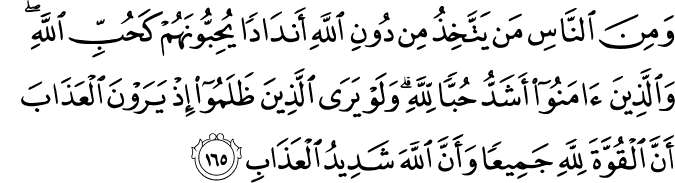
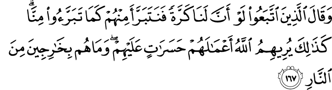

আমরা জীবনে প্রায়ই এমন কিছু পরিস্থিতিতে পড়ি, যখন ইসলামের নিয়ম মেনে চললে, আল্লাহর تعالى নির্দেশ অক্ষরে-অক্ষরে পালন করলে দেখা যাবে যে, আত্মীয়-বন্ধুদের সাথে সম্পর্কের অবনতি ঘটবে, ব্যবসায় কোনো বড় কাস্টমার হারিয়ে ফেলব, চাকরিতে প্রমোশন হাতছাড়া হয়ে যাবে, সমাজে স্ট্যাটাস নষ্ট হয়ে যাবে, লোকজন নানা কথা বলাবলি করবে ইত্যাদি। জীবনে প্রায়ই এমন ঘটনা আসে, যখন নিজেকে বোঝাতে হয়, “থাক না, একদিনেরই তো ব্যাপার। একটু ঘুষ খেলে কী হয়। সবাই খাচ্ছে না?” অথবা হয়তো নিজেকে যুক্তি দেখাই, “আমি যদি এটা না করি, তাতে কী হবে? আমার পরে যে আসবে সে তো ঠিকই করবে। তারচেয়ে এবার একটু অন্যায় করি। পরে বেশি করে ভালো কাজ করে পাপ কেটে নেবো।”
স্ট্যাটাস, সম্পত্তি, ক্ষমতা, সম্মানকে আমরা এতটাই ভালবাসি যে, এদেরকে ধরে রাখার জন্য মাঝে মাঝেই ইসলামকে বিসর্জন দিয়ে দেই। জেনে শুনে আল্লাহর تعالى নির্দেশ অমান্য করি। মনে মনে আল্লাহর تعالى সাথে পাপ-পুণ্যের লেনদেনের হিসেব করি। তাঁকে تعالى বোঝানোর চেষ্টা করি: কেন তাঁর تعالى নিষেধ এবার মানছি না, এবং কেন তাঁর تعالى উচিত এবার আমাকে মাফ করে, আরেকবার সুযোগ দেওয়া।
যারা এধরনের কাজ করেন, তাদের কী হবে, তা এই আয়াতে বলা হয়েছে—
{kind=link}
এরপরেও কিছু লোক আছে যারা অন্যদেরকে আল্লাহর সমান গুরুত্ব দেয়। তাদেরকে তারা এমনভাবে ভালবাসে, যেভাবে আল্লাহকে ভালবাসার কথা। কিন্তু যারা বিশ্বাসী, তাদের আল্লাহর প্রতি ভালবাসা অত্যন্ত মজবুত। হায়রে! যারা সীমা অতিক্রম করে অন্যায় করে, ওরা যদি বুঝতো যে, [যা তারা বুঝবে, যখন তারা জাহান্নামের শাস্তির দিকে তাকিয়ে থাকবে] সকল ক্ষমতা আল্লাহর এবং আল্লাহ বড়ই কঠিন শাস্তি দেন। [আল-বাক্বারাহ ২:১৬৫]
{kind=link}
তাদেরকে তারা এমন ভাবে ভালবাসে, যেভাবে আল্লাহকে ভালবাসার কথা
কালিমা পড়ার সময় আমরা বলি, “লা ইলাহা ইল্লাল্লাহ” —এখানে إِلَٰه ইলাহ শব্দটিকে সাধারণত উপাস্য বা উপাসনার যোগ্য প্রভু অনুবাদ করা হয়। কিন্তু ইলাহ অর্থ আসলে হচ্ছে: কোনো কিছু বা কাউকে এতটাই চাওয়া হয়, এতটাই ভালবাসা হয় যে, ভালবাসা তখন উপাসনার পর্যায়ে চলে যায়। হৃদয়ে তখন দিন, রাত শুধু ইলাহ-এর চিন্তা ঘোরে। ইলাহ হয়ে যায় জীবনের সবচেয়ে গুরুত্বপুর্ণ আকাঙ্খা। বাকি সব কিছু ইলাহ’র কাছে তখন তুচ্ছ। মন তখন ইলাহকে পাওয়া, ইলাহকে তুষ্ট করার চিন্তায় বিভোর হয়ে যায়।[১][১১]
কালেমা পড়ে আমরা যখন আল্লাহকে আমাদের ইলাহ হিসেবে গ্রহণ করবো, তখন থেকে আল্লাহকে আমরা যেভাবে ভালবাসবো, সেভাবে আর কাউকে বা কিছুকে ভালবাসবো না। কিন্তু এরপরেও মানুষ তার জীবনে একাধিক ইলাহকে স্থান দেয়। কারো বেলায় ইলাহ হয় তার সম্পদ। কারো বেলায় তা হয় তার মান-সম্মান, সমাজে স্ট্যাটাস। কারো বেলায় ইলাহ হয়ে যায় তার জৈবিক কামনা। কেউ আবার তার স্বামী, বা স্ত্রী, বা সন্তানদেরকে তার ইলাহ বানিয়ে ফেলে। মানুষ তখন এসব ইলাহ’কে পেতে গিয়ে, খুশি করতে গিয়ে তার সমস্ত মনোযোগ, সময়, শক্তি দিয়ে দেয়। এভাবে মানুষ একাধিক ইলাহ’কে একই সাথে পাওয়ার চেষ্টা করে। তখন শুরু হয় একাধিক ইলাহ’র মধ্যে প্রতিযোগিতা। শেষ পর্যন্ত একাধিক ইলাহ’র কোনোটাকেই ঠিক মতো না পেয়ে অশান্তি, অতৃপ্তিতে, হতাশায় ডুবে যায়।[১১]
কোনো মানুষের জীবনে ইলাহ’র মতো তীব্র আকাঙ্ক্ষার কিছু একসাথে দুটো থাকতে পারে না। তাহলে সে দুটো আর তখন ইলাহ থাকে না, শুধুই অনেক-আকাঙ্ক্ষার কিছু হয়ে যায়। যখন সে কোনো কঠিন পরিস্থিতে পড়ে যায়, তখন সে সেই দুই আকাঙ্ক্ষার মধ্যে যে কোনো একটিকে কম গুরুত্ব দেয়। মাঝে মাঝে সে একটিকে নিয়ে খুব ব্যস্ত হয়ে পড়ে, আর অন্যটিকে ভুলে যায়। আবার যখন পরিস্থিতি বদলায়, সে অন্যটিকে নিয়ে আবার ব্যস্ত হয়ে পড়ে, প্রথমটিকে ভুলে যায়। এভাবে তার দুই আকাঙ্ক্ষার মধ্যে টানাহেঁচড়া চলতে থাকে। আল্লাহ تعالى এরকম কোনো আকাঙ্ক্ষার কিছু নন। তিনি একজন ইলাহ। তাঁর সাথে অন্য কেউ বা কিছু ইলাহ হতেই পারে না। লা ইলাহা ইল্লাল্লাহ — আল্লাহ تعالى ছাড়া আর কোনো ইলাহ থাকতেই পারে না!
কিন্তু যারা বিশ্বাসী, তাদের আল্লাহর প্রতি ভালবাসা অত্যন্ত মজবুত
কিন্তু এরপরেও কিছু মানুষ আছে যারা সমাজ, সংস্কৃতি, সম্মান, সম্পদ, ক্ষমতা, স্ট্যাটাস, ‘লোকে কী বলবে’ এসবের থেকে আল্লাহকে تعالى বেশি ভালবাসতে পেরেছে। তাদের কথার ধরন, পোশাকের ধরন, বন্ধু-বান্ধবদের প্রকৃতি, ঘরের আসবাব পত্র, লাইব্রেরিতে সাজিয়ে রাখা বইগুলো, ফেইসবুকের স্ট্যাটাস, মোবাইল ফোনের অ্যাপসগুলো—এই সবকিছু দেখলে বোঝা যায় যে: এদের জীবনে কোনো একটা বিরাট উদ্দেশ্য আছে এবং এরা সেই ব্যাপারে খুবই সিরিয়াস। এরা শপিং মলে ঘণ্টার পর ঘণ্টা বেহুদা ঘুরে বেড়ায় না, প্রতিদিন ফোনে দুই ঘণ্টা গল্প করে না, দিনে তিনটা হিন্দি সিরিয়াল দেখে না, ফেইসবুকে ঘণ্টার পর ঘণ্টা হাঁ করে তাকিয়ে থাকে না, রাস্তা ঘাটে বসে পুরো সময়টা মোবাইল ফোনে Angry Birds খেলে না। এদের ভাবসাব পুরোই আলাদা। একদল মানুষ এদেরকে নিয়ে হাসি ঠাট্টা করে, এদেরকে নানা ধরনের নাম দেয়: মোল্লা, নিনজা, তালেবান, হুজুর— কিন্তু ওদেরই মধ্যে কিছু আছে, যারা এদের দিকে শ্রদ্ধা নিয়ে তাকিয়ে থাকে, আর বাসায় ফিরে ভাবে, “ইস, আমি যদি এদের মতো হতে পারতাম…”
যারা সম্পদের লোভে এলাকার ‘হাজি সাহেবের’ তোষামোদী করে, এলাকায় ক্ষমতা পাওয়ার জন্য কোনো ‘বড় ভাইয়ের’ চামচামি করে, নিজেকে স্মার্ট জাহির করার জন্য সিনেমার নায়ক-নায়িকার নকল করে জামাকাপড় পড়ে, বড় হুজুরের খাস উসিলা পাওয়ার জন্য হুজুর যা বলে তাই অন্ধভাবে করতে ঝাঁপিয়ে পড়ে —তারা কিয়ামতের দিন গিয়ে এক ভয়ঙ্কর বাস্তবতার সম্মুখীন হবে। তারা দেখবে যে, যাদেরকে তারা এত বেশি ভালোবাসতো, সময় দিত, খুশি করার চেষ্টা করতো, অন্ধভাবে অনুকরণ করতো —ওরা কেউ আর তার জন্য এগিয়ে আসছে না। এগিয়ে আসা তো দূরের কথা, ওরা কেউ স্বীকার পর্যন্ত করছে না যে, ওদেরকে তারা এত ভালোবেসে ছিল, ওদের জন্য এত করার চেষ্টা করেছিল, ওদেরকে এতটাই অনুকরণ করত। সেদিন হবে এক চরম হতাশার অভিজ্ঞতা—
যাদেরকে মানুষ অনুসরণ করতো, ওরা যখন তাদের অনুসারীদের সাথে সব সম্পর্ক অস্বীকার করবে; যখন সবাই মিলে একসাথে জাহান্নামের কঠিন শাস্তির দিকে তাকিয়ে থাকবে; যখন তাদের মধ্যে সমস্ত বন্ধুত্ব-সম্পর্ক ছিন্ন হয়ে যাবে; তখন যারা ওদেরকে অনুসরণ করতো তারা বলবে, “হায়! যদি আমরা আর একটা বার সুযোগ পেতাম পৃথিবীতে ফিরে যাওয়ার, তাহলে আজকে ওরা যেভাবে আমাদেরকে অস্বীকার করে উপেক্ষা করছে, ঠিক সেভাবে আমরাও ওদেরকে দুনিয়াতে উপেক্ষা করতাম।” এভাবে আল্লাহ তাদেরকে দেখাবেন: তারা দুনিয়ায় কী করতো, যাতে করে তারা বার বার আফসোস করতে থাকে। তারা জাহান্নামের আগুন থেকে কখনই বের হতে পারবে না। [আল-বাক্বারাহ ২:১৬৬-১৬৭]
{kind=link}
{kind=link}
আমরা যেই আত্মীয়ের সাথে সম্পর্ক ঠিক রাখার জন্য তার বিয়ের অনুষ্ঠানে অর্ধ নগ্ন হয়ে যাই, যেই বন্ধুর সাথে সম্পর্ক ঠিক রাখার জন্য তার বাচ্চার বার্থডে পার্টিতে গিয়ে ছেলে-মেয়ে মাখামাখি করে নাচ-গান করি, যেই প্রতিবেশীর সামনে স্ট্যাটাস ঠিক রাখার জন্য সুদের লোন নিয়ে নতুন মডেলের গাড়ি কিনি—সেই আত্মীয়-বন্ধু-প্রতিবেশীরা কেউ কিয়ামাতের দিন আমাদেরকে বাঁচাতে এগিয়ে আসবে না। বাঁচানো তো দূরের কথা, আমাদের সাথে যে কোনো ধরণের সম্পর্ক ছিল, সেটা স্বীকারই করবে না।
সেদিন আমরা যখন অল্প কিছু ভালো কাজের অভাবে জান্নাত হারিয়ে ফেলবো, তারপর ভয়ংকর শক্তিশালী কিছু সত্তা এসে নিষ্ঠুরভাবে আমাদেরকে টেনে হিঁচড়ে জাহান্নামের আগুনের দিকে নিয়ে যেতে থাকবে, তখন আমরা আমাদের স্বপ্নের মডেল, গায়ক, সিনেমার নায়ক, পাড়ার বড় ভাই, ইউনিভার্সিটির ফ্যাশনপ্রেমী আপু’র দিকে তাকিয়ে একটু সাহায্যের জন্য যতই করুণভাবে হাহাকার করি, কোনো লাভ হবে না। বরং ওরা তখন আমাদেরকে দেখে বলবে, “তুমি কে? তোমাকে তো আমি চিনি না?”
বাকারাহ-এর এই আয়াতগুলো আমাদের জন্য সাবধান বাণী: আমাদেরকে আমাদের Sense of Priority ঠিক করতে হবে। সব সময় মাথায় রাখতে হবে: আমি সমাজ, সংস্কৃতি, আত্মীয়তা, বন্ধুত্ব, সন্তানদের জন্য নিজেকে ব্যস্ত রাখতে গিয়ে যেন আমার প্রভুকে ভুলে না যাই। আমার প্রভু সবার আগে।
আমার সন্তান না হয় স্কুলে একটু বেশি সময় বসে থাকলো। তাই বলে তাকে সময়মত বাসায় আনতে গিয়ে আমি আমার প্রভুর সাথে যুহরের ওয়াক্তের মিটিংটা মিস করতে পারি না। আমার বান্ধবী তার গায়ে-হলুদে না গেলে মন খারাপ করবে, কিন্তু তাই বলে আমার প্রভুর সামনে দাঁড়িয়ে আমি সাজব কিছু পরপুরুষের মনোরঞ্জন করার জন্য—এটা হতে পারে না। আমার প্রতিবেশী আমার ভাঙা গাড়ি দেখে আমাকে তুচ্ছ তাচ্ছিল্য করতে পারে, কিন্তু আমার প্রভু আমাকে দেখছেন, আর আমি ব্যাংকে বসে হারাম লোনের কাগজে সই করছি—এটা হতে পারে না। ‘লোকে কী বলবে’—সেটা আমি ভয় পাই না, বরং ‘আমার প্রভু রাগ করবেন’—সেটা আমি সবচেয়ে বেশি ভয় পাই।
সূত্র:
- [১] নওমান আলি খানের সূরা আল-বাকারাহ এর উপর লেকচার এবং বাইয়িনাহ এর কু’রআনের তাফসীর।
- [২] ম্যাসেজ অফ দা কু’রআন — মুহাম্মাদ আসাদ।
- [৩] তাফহিমুল কু’রআন — মাওলানা মাওদুদি।
- [৪] মা’রিফুল কু’রআন — মুফতি শাফি উসমানী।
- [৫] মুহাম্মাদ মোহার আলি — A Word for Word Meaning of The Quran
- [৬] সৈয়দ কুতব — In the Shade of the Quran
- [৭] তাদাব্বুরে কু’রআন – আমিন আহসান ইসলাহি।
- [৮] তাফসিরে তাওযীহুল কু’রআন — মুফতি তাক্বি উসমানী।
- [৯] বায়ান আল কু’রআন — ড: ইসরার আহমেদ।
- [১০] তাফসীর উল কু’রআন — মাওলানা আব্দুল মাজিদ দারিয়াবাদি
- [১১] কু’রআন তাফসীর — আব্দুর রাহিম আস-সারানবি
- [১২] আত-তাবারি-এর তাফসীরের অনুবাদ।
- [১৩] তাফসির ইবন আব্বাস।
- [১৪] তাফসির আল কুরতুবি।
- [১৫] তাফসির আল জালালাইন।